| THE BASICS of Photopea | |
| Step 01: Some Basic Facts About Photopea | 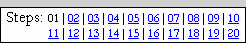 |
This first step is an introduction to the basics of Photopea. It will cover such basic items as Photopea's interface, menu, file type, and some other basic info. If you are familiar with Photopea then some of this information will be a review, but if you have never used Photopea then this information will be very important to helping you become familiar with the software.
The 20 steps of this tutorial will walk you through creating everything you need to have a wonderful project. As you go through these tutorials, keep something important in mind...
READ
EVERYTHING!
DO NOT SKIP ANYTHING!
READ and FOLLOW the DIRECTIONS CAREFULLY!
and
take notes!!
Photopea is an advertising-supported software. It is an advanced image editing program that was originally developed as a free alternative to Photoshop in 2013 by Ivan Kuckir. It is a raster graphic editor that can be run through a browser (and thus is actually considered an app.) It is compatible with Photoshop's proprietary PSD file format, but can also save files as JPG, PNG, GIF, SVG, PDF, and several other formats. While Photopea is browser based, it stores all files locally and does not upload any files to a server. This helps to protect user's work.
While Photopea was originally designed to work with raster images as mentioned above, it does possess the ability to work with vector images (though it does have significant limitations).
| Raster image | Vector image |
| 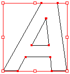 |
The images above are shown larger than their normal size to emphasize that the larger you make a raster image the more distorted it will become while a vector image will remain clean and pretty no matter how big or small you make it.
Let's jump in now and examine the Photopea interface.
Note that while I will be assuming that you are using Chrome, Photopea will work in any browser and look (pretty much) the same.
Below is a screenshot of what you will likely see...
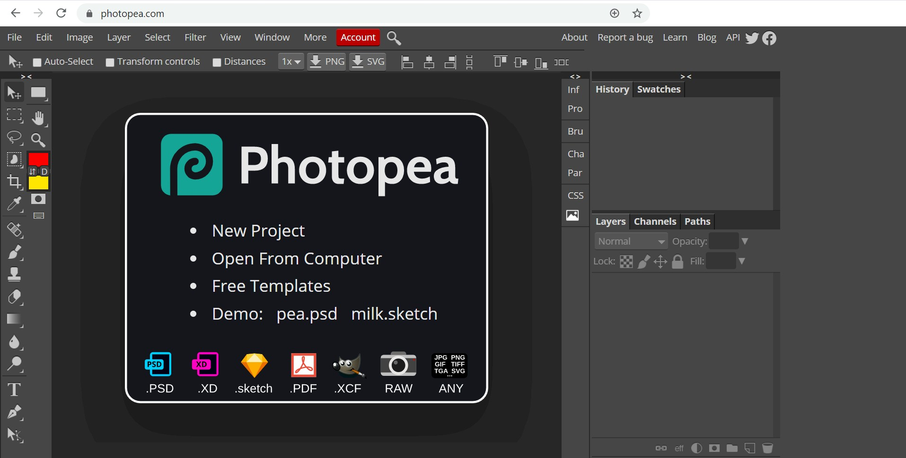
This is called the Start workspace and allows you to select from a variety of tasks to get started with.
|
I want to take a quick second here for a short aside (which is where
the speaker talks for a moment about something related to the main
topic, in this case Photopea, but not absolutely necessary for the
listener, YOU, to be familiar with). I want to point out that
Photopea can actually be downloaded onto your device. When working
with Photopea, you can go to the webpage as described above and then
disconnect from the Internet - Photopea runs entirely from your
browser's cache and sends no files to any server on the Internet so
your files are secure. However, there is a way to download Photopea so that it appears as a application your device. If you are using your own device, you can follow these directions to download Photopea to it. If you are in a lab or using a school supplied device, check with your instructor before attempting to download Photopea. Installing Photopea to your device:
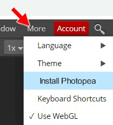 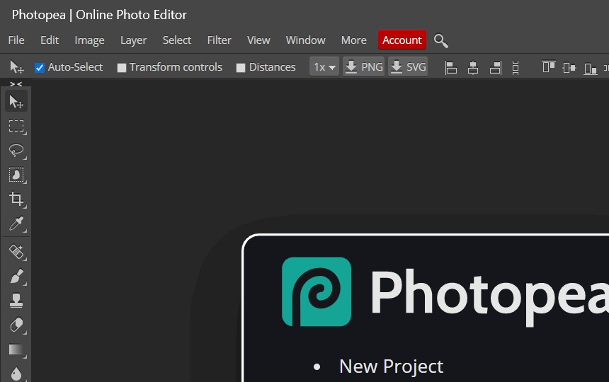 and that a program entry has been created in your program list From now on when you want to run Photopea, you can simply open the program from your program list as with any other program on your device. In other words, you do not have to go to photopea.com to run Photopea. Additionally, you are no longer hampered by quirky browsers that crash or restart for no reason. Use this power for good only. OK, back to our originally scheduled tutorial. |
Before we can start working on our photograph, we need to take the picture.
We need a picture that we can open up in Photopea so we can get some experience with the Photopea environment. You will need to take a picture of yourself (or better yet have someone else take a picture of you) that we will use for this project. Now, before you just start snapping pictures (or worse than that use a picture that you have already taken), there are some picture guidelines you need to follow:
Now that you have your picture ready to go, let's open it up in Photopea. Since this is an existing image, let's go with the Open From Computer option.
Let's take a few minutes and have a look around Photopea and get familiar with the interface. The Black Theme (the fact that everything around your image is black) is the default setting for Photopea, just like it is in Photoshop. This look was chosen by Adobe because its developers claim that it helps to make using the software a more immersive experience and allows users to focus on the image and not on the interface itself. Unfortunately, using such strong colors in the interface can actually trick your eyes into thinking the image you are editing is brighter or darker than it really is. Let's take a second to edit the display and change the hard-to-look-at-black background to a nice light gray color.
Now for the reality of this tutorial: I don't really care what Theme you use. If you like the Black Theme then use it. Just know that for the remainder of this tutorial, I will be using the Silver Theme, so if you use a different Theme than I am using then your screen will not look like my screenshots
Photopea places the tools for working with images in five main sections:
These five sections, along with the Document window (where you actually see and manipulate your image), make up the Photopea interface. Let's take a quick look at each section.
Application bar
Across the very top of screen is the Application bar (includes File, Edit, Image, etc. - also known as the Menu bar). This bar is common to most Windows and Mac based programs and operates the same in all of them. Near the end of the menu bar is the Window button...
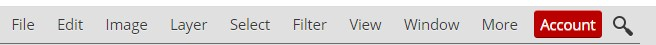
When you click it, a drop-down menu appears that allows you to choose which
tool panels you want to show in your workspace. This is a quick and easy way to
show the panels that you need without having to hunt around for them.
While the Application bar is common to computer programs, Photopea has four unique areas we need to discuss: Tools panel, Options, bar, Panel section, and Docked Panels. Let's look at each one in more depth.
Tools panel
The Tools panel should be visible to you on the left side of your screen. Take a look at the tools Photopea offers. Remember that any tool that has a little arrow to its lower right has more than one mode. You can either right-click a button or click it and hover for a second to see all of its modes.
Here's a screenshot of Photopea's Tools panel (yours is probably one column - this is fine, I just put the image in two columns to made it fit easier on the page)...
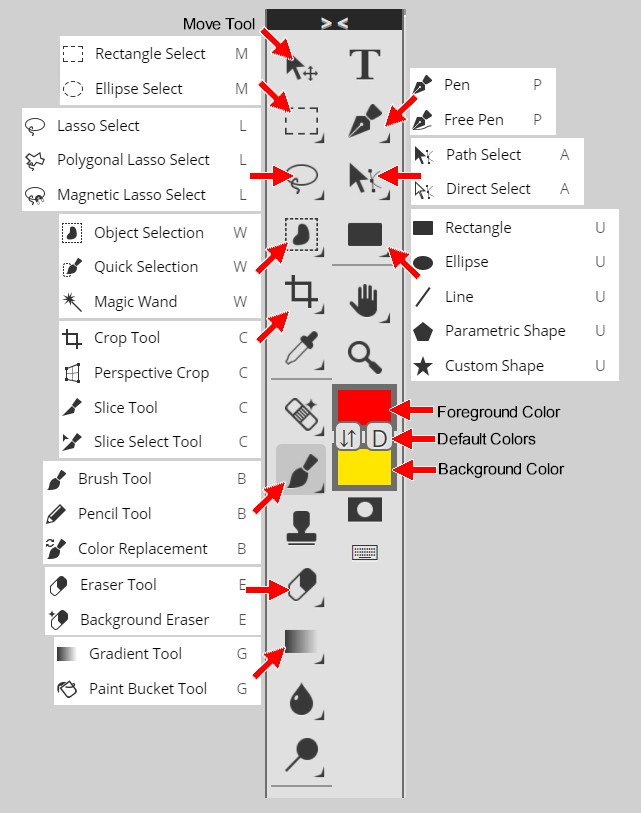Many of the more useful tools are expanded to show all their varieties, and labels are on some other useful parts. It's a good idea to leave the tools with multiple varieties set to the ones you see selected here, since we'll be using many of these tool later.
The top batch of tools has to do with selection and basic editing. The Rectangle Select tools can select areas in the shape of rectangles and circles. Any selected area will be outlined with a black and white dashed line. Any actions you do will be confined to that area. The selection can be cancelled by clicking Select on the Menu bar and choosing Deselect, or pressing Ctrl+D on the keyboard (this is a useful shortcut - remember it!). Other important tools in this batch are Move (allows you to drag around a selected area), Lasso (for drawing your own selected areas), Magic Wand (for selecting an area of similar colors), and Crop (to remove unwanted portions of your image). The Eyedropper tool is also good to know, since you can use it to pick colors to work with from an existing picture.
The next batch is the freehand tools. The most important ones are the Brush tool (which draws with color), and the Pencil tool (for coloring solid pixels). The Eraser tool works like the brush tool, except that it turns things transparent instead of drawing. The Paint Bucket tool is good for filling areas with a color or pattern.
Next, we have some vector tools. There are several important buttons in this section, such as Text, Pen, and Direct Selection. Many of these tools work by storing data about lines instead of data about pixels. This means we can resize these items without having to worry about the blurring that often happens when graphics are resized. We'll give you a break and say don't worry about these too much right now.
Under these are some miscellaneous tools. The Hand and the Zoom tools are very important, because they can be used to pan and zoom your view of the image you're working on. It's good to know the keyboard shortcuts for these: Ctrl+Plus key zooms in and Ctrl+Minus key zooms out, and clicking and dragging the mouse while the space bar is pressed will pan the picture.
Near the bottom of the Tools panel you see a colored square over two smaller buttons (a double-headed arrow button and a button with a D on it) with another colored square under them. The top colored square is the foreground color (in the example picture to the left it is the large red square), which is the color that all the drawing tools use. The colored square under (the large yellow square) is the background color, which is the color that the eraser uses on a layer that cannot be transparent. These colors can be changed by clicking on them (clicking on them opens the Color Picker, which is explained in more detail in Step 07). The little double-arrow button between the foreground and background color squares swaps the foreground and background colors. The tiny button with the D on it restores the foreground color to Black and the background color to White (these are their default colors, which is where the D comes from).
Options bar
When we select a tool, the top of Photopea will offer up a group of options that allow us to customize the tool to complete a variety of tasks. Let's take a quick look at this area.
This is the Tools Options bar. Although every tool in the Tool panel has its own set of options here, some are pretty common. On the very left is a pull down menu you can use to store presets of the current tool (it is that little arrow just to the right of the paintbrush in the image above), which is very useful for defining customized variations of a tool that you'll re-use a lot. Blend Mode: is another common one, and works a lot like the mode of a layer (which we will cover later). We will want this set to Normal for most things that we do.
Panels
On the right side of the Photopea screen you will see several different Panels, or small windows. There are quite of few of these Panels available in Photopea (there are over 20 of them), and they will be of great importance to you as you work with Photopea because they contain tools and information you will use often. At this point you can see the History and Layers panels. These are two of the most important panels in Photopea. It is a good idea for the Layers panel to be large, and to know where the History panel is so you can quickly correct mistakes. The History and Layer panels are indicated by red arrows below...
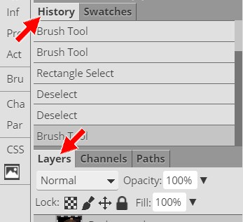
You can rearrange these panels by dragging their tabs (the area that contains the name of the panel at the top) left and right within their panel group. As you use Photopea, you'll discover what Panels are most important to you, and you can place them where you like (for now, leave them alone).
You will get a chance to work with many of Photopea's Panels as you go through this tutorial, but let's take a quick second to have a closer look at the History panel...
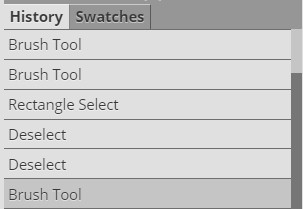
The History Panel allows you to undo multiple actions all at once. The list in the window shows the recent actions you've taken, with the most recent on the bottom. Clicking on previous steps undoes any actions done since that step (for example, if you click 4 steps up the list, Photopea will undo everything you did after that point). The shortcut to undo the very last action you did is Ctrl+Z, which is very useful when drawing. Keep in mind that every change you make to a graphic will be saved in the History panel, no matter how small the change. So if you make a large number of tiny changes you may have to go pretty far up the history list to undo them all.
By default, Photopea remembers 30 history states (in other words, Photopea remembers 30 individual changes you made, no matter how small, to your image). This is not a very large number of states, especially if you are making lots and lots of changes to your image as we are going to do. Photopea does the ability to save more history states, but to get that you have to pay for the premium version. Since we are a school and none of us have any money, we are going to have to live with the 30 history states. Just keep in mind as you are working that you only have 30 undos.
Docked Panels
Docked Panels appear just to the left of the Panel area and are a vertical sequence of icons with shortcut names on them...
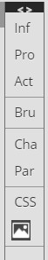
Clicking any of these icons will expand the respective panel so that the entire panel is visible. For instance, if we click on the Cha icon in the above image we get this...
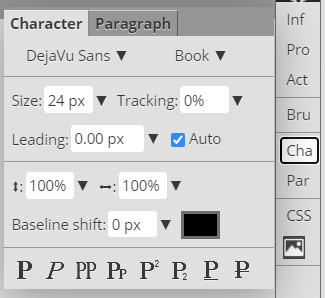
This is the Character panel that allows us to modify any text we are working with. To collapse the panel back into a docked panel, simply click on the same icon (in our example above, you would click back on the Cha icon).
Before we move on to actually working with your face, let's take a look at a few additional useful keyboard shortcuts in Photopea.
| D | Resets the foreground color to black and the background color to white |
| X | Swaps the foreground and background colors |
| F | Toggles between standard and full screen modes |
| Tab | Turns the Panels off (and then back on) |
| ] | Increases brush size |
| [ | Decreases brush size |
|
Alt+roll mouse wheel Zooms in and out |
|
Each of these shortcuts will be discussed again as they are needed throughout this tutorial, but it is a good idea for you to be introduced to them now.
After finishing this tutorial (and this course) you will be able to manipulate a wide variety of images. If fact, all kinds of strange images are possible by messing with graphics, as the images below demonstrate...
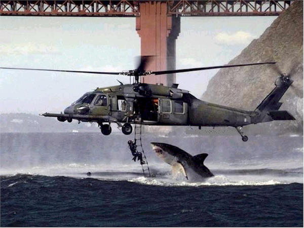
Don't worry, the guy on the ladder didn't get eaten. The image was created by joining a photo of an Air Force helicopter during a water rescue training mission in San Francisco with a photo of a shark breaching (jumping out of the water) off the coast of Africa.
Or how about this one...
Or these...
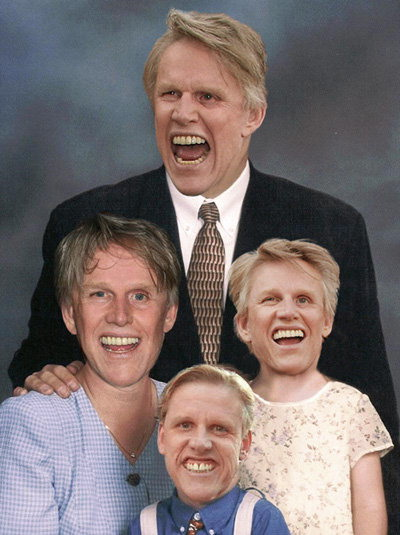
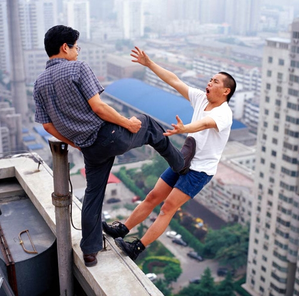
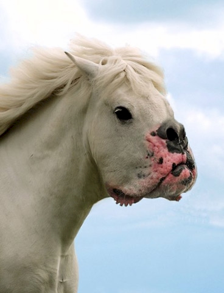
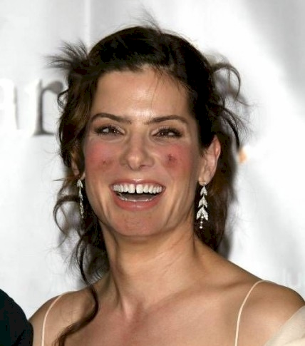
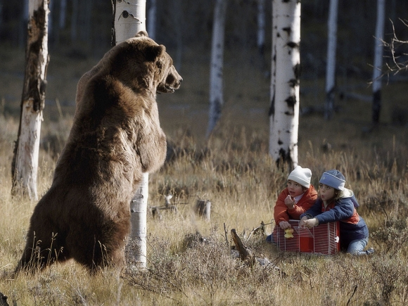
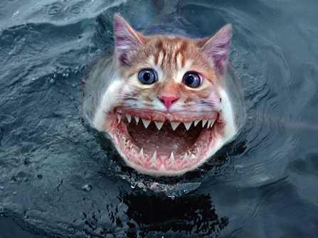
Don't believe everything you see!
Remember to save your work after making ANY changes!
It is very frustrating to redo steps because your device blew up and you lost
your work!
Remember also, as you work through these tutorials, be sure
you are taking notes on anything new you learn -
it will make passing quizzes and test much easier!
Alright, now that you are familiar with the parts of Photopea, let's start working with your picture and remember to...
READ THE DIRECTIONS!
01 | 02 | 03 | 04 | 05 | 06 | 07 | 08 | 09 | 10 | 11 | 12 | 13 | 14 | 15 | 16 | 17 | 18 | 19 | 20